These words are common when Australians talk about buying property and applying for a home loan.
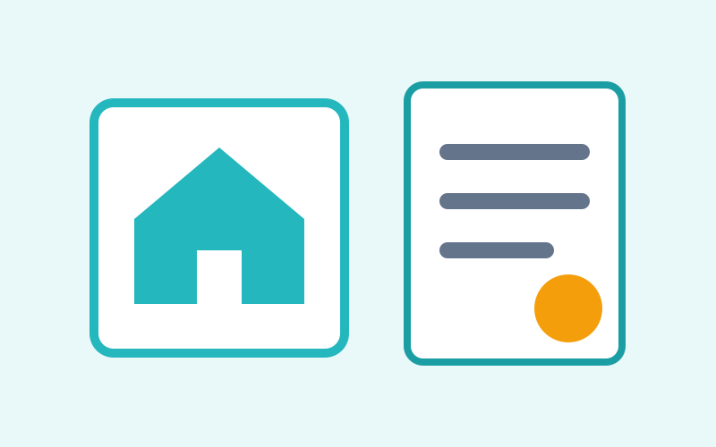
Mortgage
/ˈmɔːgɪdʒ/
A legal loan agreement used to buy a property.
"I have a mortgage with an Australian bank."
get a mortgagemortgage paymentmortgage broker
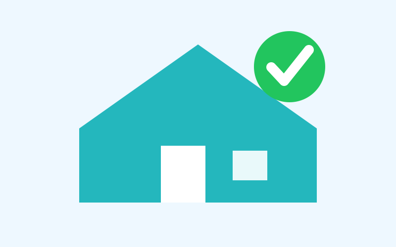
Home Loan
/həʊm ləʊn/
Money borrowed from a bank to buy a home.
"I want to apply for a home loan."
home loan applicationcompare home loanshome loan rate
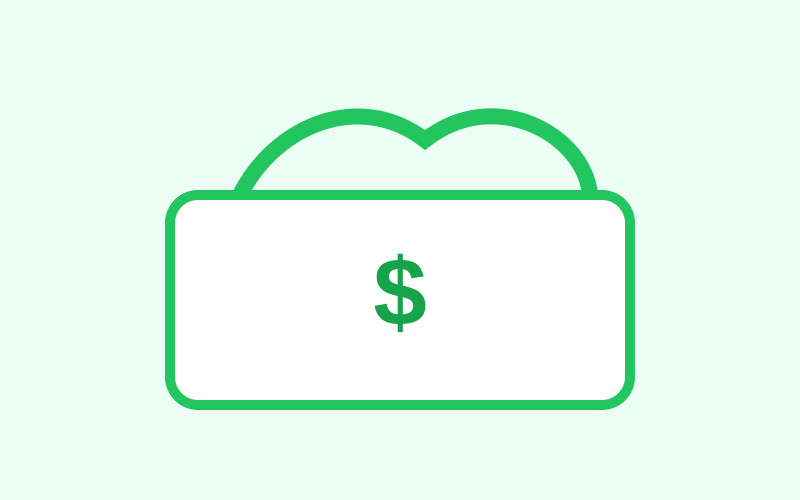
Deposit
/dɪˈpɒzɪt/
Money you pay first when buying a house.
"I saved a 10% deposit."
house deposit5% depositsave a deposit
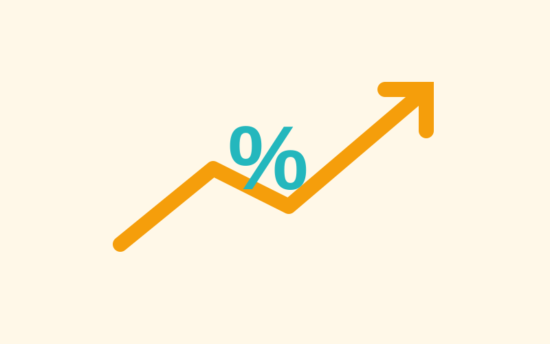
Interest Rate
/ˈɪntrəst reɪt/
The percentage the bank charges you to borrow money.
"What is the current interest rate?"
current ratelow interest raterate change
Fixed Rate
/fɪkst reɪt/
An interest rate that stays the same for a set time.
"We chose a fixed rate for two years."
fixed-rate loanfixed periodlock in a rate
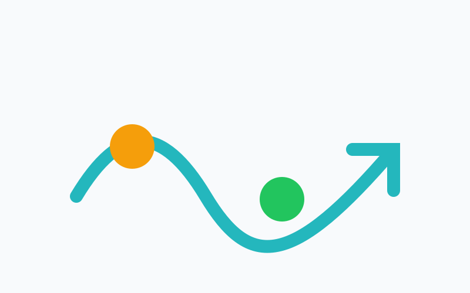
Variable Rate
/ˈveəriəbəl reɪt/
An interest rate that can go up or down.
"A variable rate can change with the market."
variable-rate loanrate risesrate falls
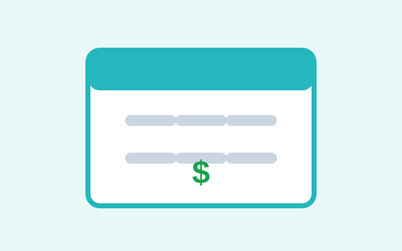
Repayment
/rɪˈpeɪmənt/
Money you pay back to the bank regularly.
"My monthly repayment is about $2,400."
monthly repaymentloan repaymentmake repayments
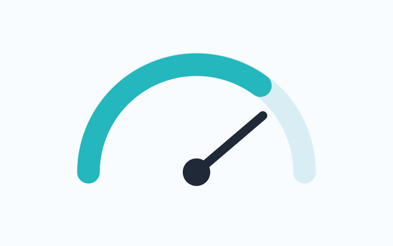
Borrowing Capacity
/ˈbɒrəʊɪŋ kəˈpæsəti/
The amount a bank may allow you to borrow.
"My borrowing capacity depends on my income."
check capacityincrease capacityborrowing limit
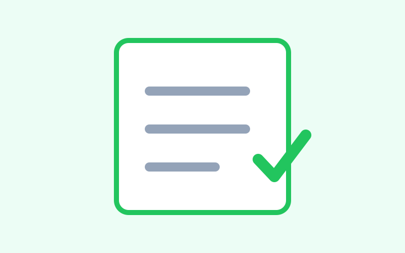
Pre-approval
/priː əˈpruːvəl/
A bank's early agreement that you may be able to borrow a certain amount.
"I got pre-approval before looking at houses."
loan pre-approvalget pre-approvedpre-approval letter
Mortgage Broker
/ˈmɔːgɪdʒ ˈbrəʊkə/
A person who helps you compare home loans.
"The mortgage broker explained my options."
speak to a brokerbroker feeloan options
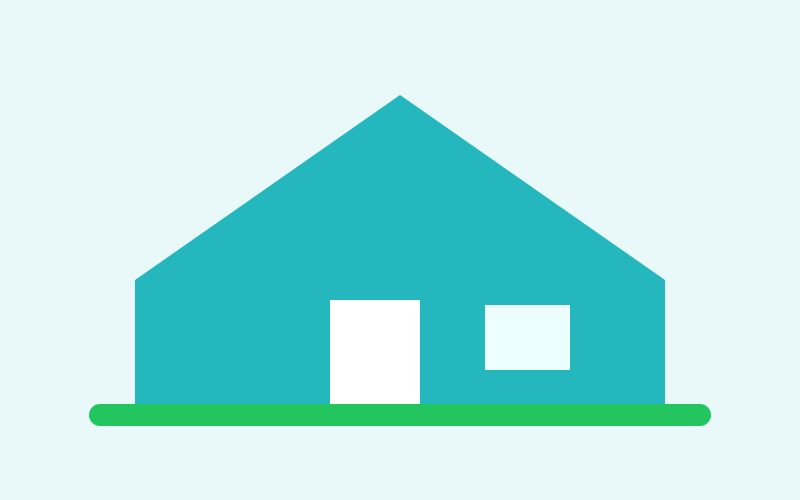
Property
/ˈprɒpəti/
Land, a house or an apartment that someone owns.
"We found a property in Wagga Wagga."
buy propertyproperty priceproperty listing
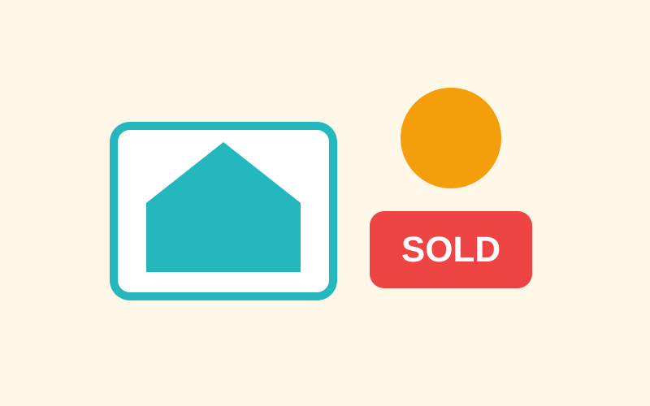
Real Estate Agent
/rɪəl ɪˈsteɪt ˈeɪdʒənt/
A person who sells or rents properties.
"I asked the real estate agent about the inspection."
call an agentlisting agentagent inspection
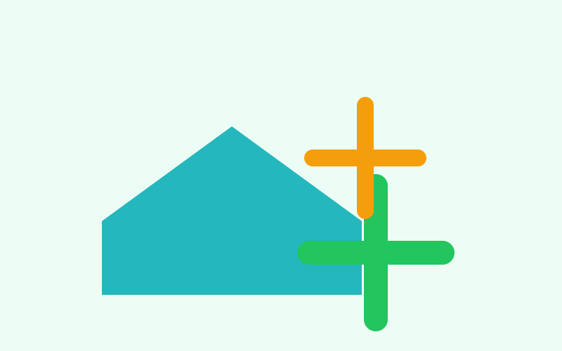
Equity
/ˈekwəti/
The part of the home value that you own after subtracting the loan.
"My equity increased after the house price rose."
home equitybuild equityuse equity
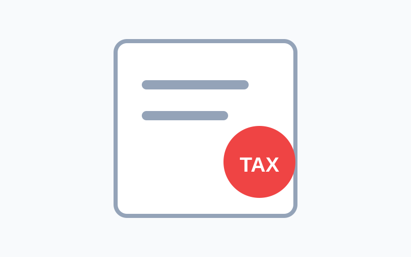
Stamp Duty
/stæmp ˈdjuːti/
A government tax that may be paid when buying property.
"How much stamp duty do I need to pay?"
stamp duty coststamp duty exemptionpay stamp duty
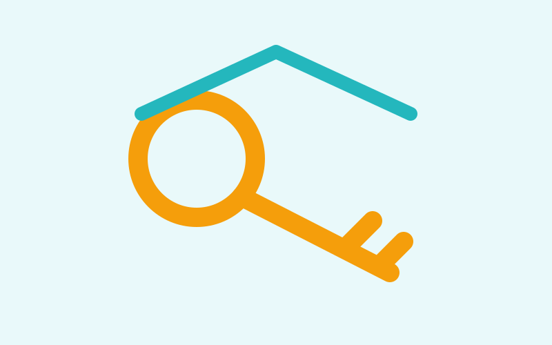
Settlement
/ˈsetlmənt/
The final step when ownership of the property transfers to the buyer.
"Settlement is next Friday."
settlement dateproperty settlementafter settlement
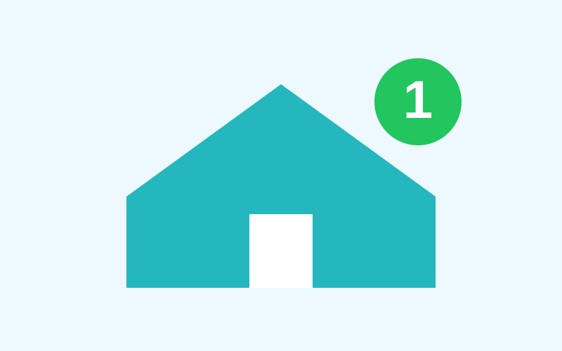
First Home Buyer
/fɜːst həʊm ˈbaɪə/
A person buying their first home.
"First home buyers may receive government support."
first home buyer schemefirst home ownerbuyer support
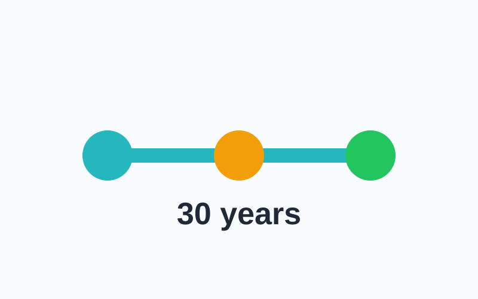
Loan Term
/ləʊn tɜːm/
The length of time you have to repay a loan.
"The loan term is 30 years."
30-year termshorter termloan length
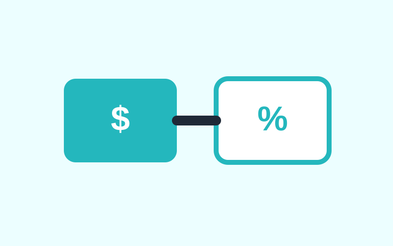
Offset Account
/ˈɒfset əˈkaʊnt/
A bank account linked to your home loan that can reduce interest charged.
"My salary goes into my offset account."
100% offsetlinked accountreduce interest
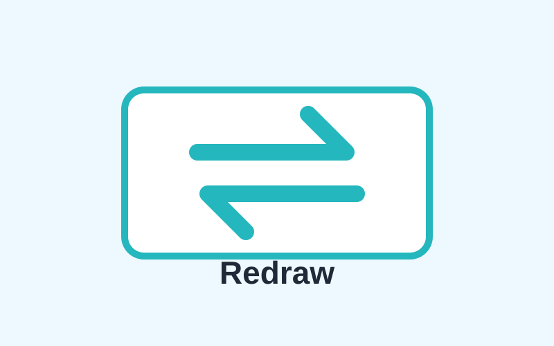
Redraw
/riːˈdrɔː/
A loan feature that may let you take back extra repayments you have made.
"This loan has a redraw facility."
redraw facilityredraw extra paymentsavailable redraw
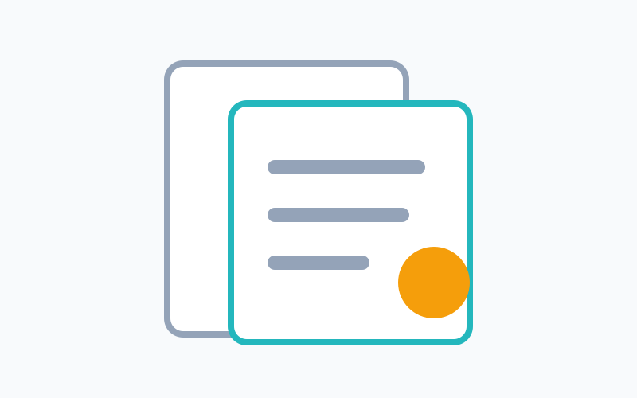
Conveyancing
/kənˈveɪənsɪŋ/
The legal work required to transfer property ownership.
"We paid a solicitor for conveyancing."
conveyancing costproperty transferlegal documents
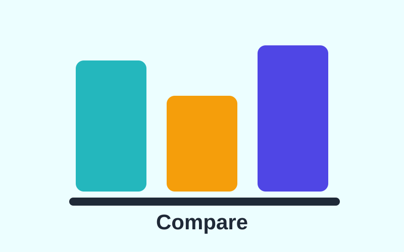
Comparison Rate
/kəmˈpærəsən reɪt/
A rate that includes the interest rate plus some standard fees and charges.
"The comparison rate is higher than the advertised rate."
compare ratescomparison rate warningtrue loan cost
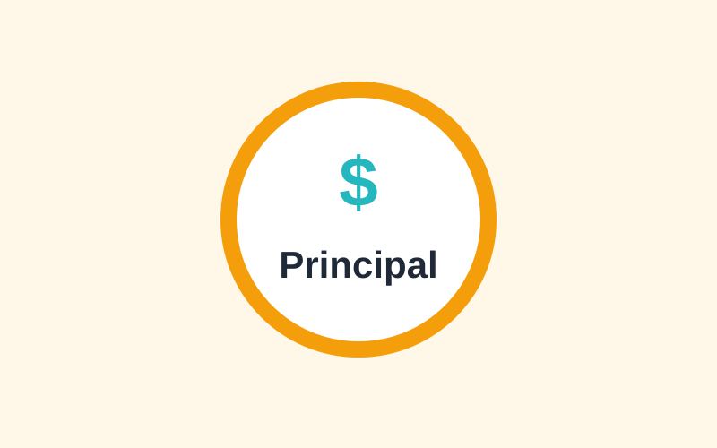
Principal
/ˈprɪnsəpəl/
The original amount of money borrowed, not including interest.
"Extra repayments can reduce the principal."
principal amountprincipal and interestreduce principal
Lender
/ˈlendə/
A bank or financial company that lends money.
"We compared lenders before choosing a loan."
home loan lendercompare lendersmajor lender
Home Equity
/həʊm ˈekwəti/
The value of the part of your home that you own.
"Home equity can grow as the loan gets smaller."
build home equityuse home equityequity growth